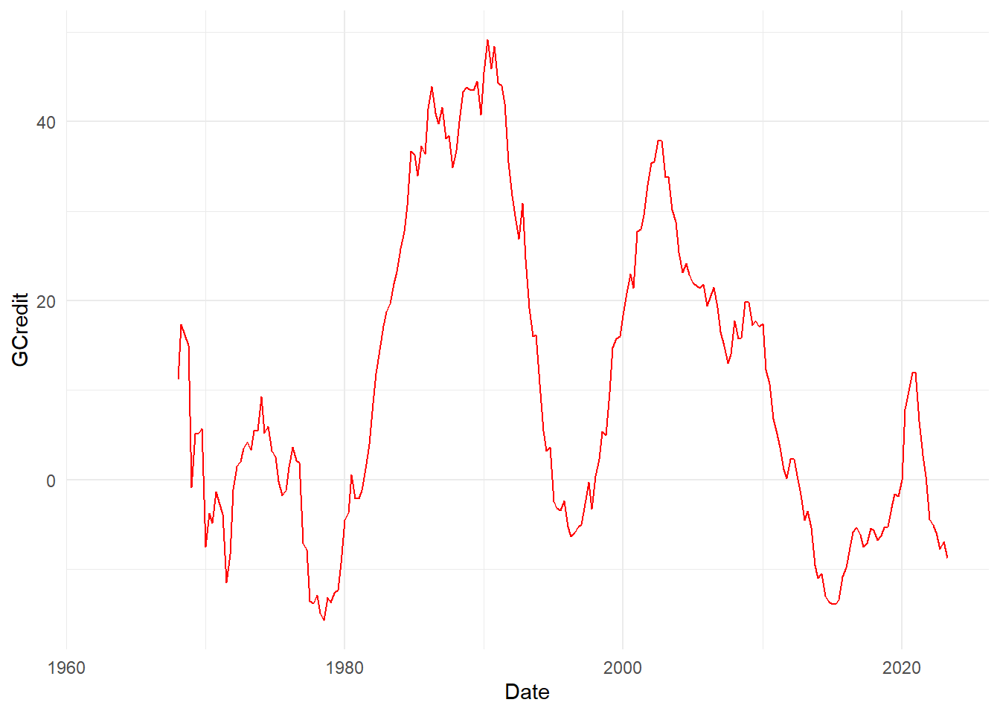

library(jsonlite) # Read in UK data
library(quantreg) # Quantile regression
library(ggridges) # Ridgeline plots
library(viridis) # Colours for graphs
library(tidyverse) # Usual
library(readxl) # And more...
library(sn) # Skew-t distribution8 GDP@Risk
8.1 Simple implementation of GDP-at-Risk using R
A somewhat fashionable use of quantile regression is by Adrian, Boyarchenko, and Giannone (2019), and their idea has become known as GDP-at-risk, rather like VaR. The idea is to use a simple forecasting model that uses some financial indicator and find the “at risk” value of growth. There are three elements:
- Estimate a “forecasting model” using quantile regression that depends on some forward-looking indicator.
- Fit a skew Student-t model to the output of their quantile estimation procedure, and use this to find the “at risk” value.
- We will plot the result as a ridgeline graph, which are really quite cool.
This is computationally quite a bit harder than our other applications.
8.2 Prelims
We need a lot of libraries for this one, although we have relatively little code!
8.3 Data
Downloaded data up until the repsent for UK GDP growth in JSON format from ONS UK in a file called ihyr.json.
json <- fromJSON("ihyr.json") # Use jsonlite to parse file
# Retrieve quarterly data, dates etc and calculate lags
qdata <- json$quarters %>%
mutate(Date = yq(date),
Growth = as.numeric(value)) %>%
select(Date, Growth) %>%
mutate(Growth_1 = lag(Growth, 1),
Growth_4 = lag(Growth, 4)) %>%
drop_na()BIS credit data is available here – be warned there is a lot of it, and you need to get all of it to find the bits you want.
totcredit <- read_excel("totcredit.xlsx",
sheet = "Quarterly Series",
col_types = c("date", rep("text", 1133))) %>% # This my need adjusting
select(Date = "Back to menu", starts_with("United K")) %>% # Find UK
slice(-c(1:3)) %>%
select(-contains("US Dollar"), -contains("Unadjusted"), -contains("Domestic currency")) %>%
mutate(Date = ymd(Date)) Warning: Expecting date in A4 / R4C1: got 'Period'Names in the BIS file are very long so kludge them to something a bit more readable.
nn <- gsub("United Kingdom - ", "", names(totcredit))
nn <- gsub(" - Adjusted for breaks", "", nn)
nn <- gsub(" - Percentage of GDP", "", nn)
nn <- gsub(" at Market value", "", nn)
totcredit <- totcredit %>%
rename_with( ~ nn)8.3.1 Plots of pivoted data
dd <- totcredit %>%
pivot_longer(cols=-Date) %>%
mutate(value = as.numeric(value)) %>%
filter(!is.na(value))
ggplot(dd) +
geom_line(aes(x=Date, y=value, colour=name), show.legend=FALSE) +
facet_wrap(~ name, scales = "free") +
theme_minimal() +
labs(x="", y="", title="Credit data; all as percentage of GDP")8.3.2 Difference data at required interval
We will use some measure of long run credit growth as a predictor of financial fragility. Pick an interval – we choose five years – and calculate the growth rate.
lagv <- 20
dd2 <- dd %>%
group_by(name) %>%
mutate(value = 100*(value/lag(value,lagv)-1)) %>%
ungroup()
ggplot(dd2) +
geom_line(aes(x=Date, y=value, colour=name), show.legend = FALSE) +
facet_wrap(~ name, scales = "free") +
theme_minimal() +
labs(x="",y="", title=paste("Credit data; Percentage difference over", lagv, "quarters"))8.3.3 Choose a variable
We select the variable we want, plot it to check, and then create a data set to use in the quantile regression. What are the variables?
# Recall all the names are in nn
print(nn)[1] "Date"
[2] "Credit to Non financial sector from All sectors"
[3] "Credit to General government from All sectors"
[4] "Credit to General government from All sectors at Nominal value"
[5] "Credit to Households and NPISHs from All sectors"
[6] "Credit to Non-financial corporations from All sectors"
[7] "Credit to Private non-financial sector from All sectors"
[8] "Credit to Private non-financial sector from Banks, total" Let’s go for number 7.
dd2 <- filter(dd2, name == nn[7]) %>%
select(Date, value) %>%
rename_with(~ c("Date", "GCredit")) %>%
mutate(Date = floor_date(Date, unit="quarter")) %>%
arrange(Date)
# Quick plot to check we have the right one
ggplot(dd2) +
geom_line(aes(x=Date, y=GCredit), color = "red") +
theme_minimal()
dataz <- left_join(qdata, dd2, by="Date") %>%
mutate(GCredit_1 = lag(GCredit,1)) %>%
mutate(GCredit_4 = lag(GCredit,4)) %>%
drop_na() %>%
filter(year(Date)<2021)
head(dataz) Date Growth Growth_1 Growth_4 GCredit GCredit_1 GCredit_4
1 1969-01-01 1.7 5.7 6.1 -0.8333333 14.9905123 11.1913357
2 1969-04-01 2.9 1.7 4.2 5.1107325 -0.8333333 17.3674589
3 1969-07-01 1.5 2.9 5.8 5.2173913 5.1107325 16.1410019
4 1969-10-01 1.6 1.5 5.7 5.6939502 5.2173913 14.9905123
5 1970-01-01 1.1 1.6 1.7 -7.4960128 5.6939502 -0.8333333
6 1970-04-01 2.8 1.1 2.9 -3.7277147 -7.4960128 5.11073258.4 Equation and estimates
Run a single quantile regression. We will do just one, and then look at in-sample predictions. Really we ought to do this recursively. A couple of parameters let us choose bits of the model.
fcast <- 4
inccg <- 1
if (inccg > 0) {
eqn.q <- formula(paste0("Growth ~ Growth_", fcast, " + GCredit_", fcast))
} else {
eqn.q <- formula(paste0("Growth ~ Growth_", fcast))
}
qvals <- seq(.05,.95,.025)
q.inst <- rq(eqn.q, data=dataz, tau=qvals)
# summary(q.inst)
q.instCall:
rq(formula = eqn.q, tau = qvals, data = dataz)
Coefficients:
tau= 0.050 tau= 0.075 tau= 0.100 tau= 0.125 tau= 0.150
(Intercept) -3.60730272 -2.65975882 -2.03373503 -0.283117717 0.08723187
Growth_4 -0.01349979 -0.01961265 0.14950306 0.326307071 0.29884421
GCredit_4 0.04892147 0.02966876 0.02880223 -0.006781692 -0.01380020
tau= 0.175 tau= 0.200 tau= 0.225 tau= 0.250 tau= 0.275
(Intercept) 0.52998577 0.67211457 0.78265307 0.87493621 0.96717528
Growth_4 0.23938813 0.26226668 0.28785310 0.29513320 0.27729443
GCredit_4 -0.01400174 -0.01139684 -0.01308326 -0.01193709 -0.01211441
tau= 0.300 tau= 0.325 tau= 0.350 tau= 0.375 tau= 0.400
(Intercept) 1.132454167 1.294438029 1.44292183 1.463810672 1.562583315
Growth_4 0.253116511 0.231861348 0.20268022 0.215751945 0.195380042
GCredit_4 -0.009604268 -0.006338726 -0.00567619 -0.002420902 -0.001360645
tau= 0.425 tau= 0.450 tau= 0.475 tau= 0.500 tau= 0.525
(Intercept) 1.663627576 1.6862397478 1.9086308843 2.039651688 2.0709412090
Growth_4 0.177560201 0.1771913047 0.1460039958 0.158547435 0.1639409996
GCredit_4 -0.000887589 0.0004844992 -0.0009085638 -0.003658792 -0.0005871492
tau= 0.550 tau= 0.575 tau= 0.600 tau= 0.625 tau= 0.650
(Intercept) 2.120989585 2.175379958 2.375690044 2.548885682 2.6555717
Growth_4 0.161292582 0.170752556 0.142450983 0.127591069 0.1586058
GCredit_4 0.002333639 0.000429499 0.002191878 -0.001498171 -0.0024793
tau= 0.675 tau= 0.700 tau= 0.725 tau= 0.750 tau= 0.775
(Intercept) 2.691126204 2.7527507431 2.886669318 2.934754152 2.999541321
Growth_4 0.192269383 0.1886024512 0.178036916 0.170590019 0.160463858
GCredit_4 -0.000934141 0.0006228696 -0.002012307 0.001794157 0.001253084
tau= 0.800 tau= 0.825 tau= 0.850 tau= 0.875 tau= 0.900
(Intercept) 3.130746672 3.433999347 3.672727571 3.840716859 4.009738583
Growth_4 0.217223769 0.195635922 0.189628209 0.242774436 0.274378382
GCredit_4 -0.003218895 -0.008257329 -0.008929732 -0.000484291 0.005502021
tau= 0.925 tau= 0.950
(Intercept) 4.3225662301 4.475711862
Growth_4 0.3251010478 0.357499115
GCredit_4 0.0004444649 0.001945412
Degrees of freedom: 208 total; 205 residual8.4.1 Non-parametric estimated quantiles
We can easily plot the estimated quantiles as ridgeline plots, see Wilke (2020). First we retrieve and then organize the predicted values.
q.predict <- t(predict(q.inst)) %>% # In-sample predictions
as_tibble(.name_repair = ~ as.character(dataz$Date)) %>%
mutate(q = qvals) %>%
pivot_longer(cols=-q, names_to="Date") %>%
mutate(Date = ymd(Date)) %>%
filter(year(Date) > 2012)Next we plot them as a non-parametric estimate of the cumulative density in a ridgeline plot.
sc <- 1000
q.predict %>%
ggplot() +
geom_ridgeline(aes(x=value, height=q, y=Date, group=Date, scale=sc, fill=as.factor(Date)),
colour=NA, show.legend=FALSE) +
scale_fill_cyclical(values = c("orange", "yellow")) +
theme_ridges() +
labs(x="", y="", title = "GDP@Risk: Non-parametric cumulative density estimates")What about with the tail probabilities emphasized? Now can use geom_ridgeline_gradient, where the fill is over the continuous x-axis.
q.predict %>%
ggplot() +
geom_ridgeline_gradient(aes(x=value, height=q, y=Date, group=Date, scale=sc,
fill=0.5-abs(q-0.5)),
colour="grey77", show.legend=FALSE) +
scale_fill_viridis(option="D", direction=-1, alpha=.67) +
theme_ridges() +
labs(x="", y="", title = "GDP@Risk: Non-parametric cumulative density estimates")
There are important features. There’s quite a long, messy left hand tail, and the density looks often multi-modal, as the colors switch. A way of tidying this up is to fit a parametric distribution and to treat that as the actual distribution. This has implications of course. This is what the original authors do.
8.4.2 Parametric results
We now fit a skew-t to the predicted quantiles, and then work with these estimated densities afterwards.
fitst <- function(e, p, q=qvals) {
sum((p - qst(q, xi=e[1], omega=e[2], alpha=e[3], nu=(e[4])))^2)
}
# fitsti <- function(e, p, q) {
# ss <- rep(0, 30)
# for (i in 1:30) {
# ss[i] <- optim(e, fitsti, gr=NULL, p, q)
# }
# e[4] <- which(ss==min(ss))
# }
dens <- NULL # Store densities
eall <- NULL # Store estimated parameters
x <- seq(-5,7,0.05) # Evaluate fitted density over this interval
# sel <- c(0.05, 0.15, 0.25, 0.36, 0.45, 0.5, 0.55, 0.65, 0.75, 0.85, 0.95)
# sel <- c(0.05, 0.25, 0.75, 0.95)
sel <- qvals
dte <- q.predict$Date[88]
kvar <- 0.1
for (dte in unique(q.predict$Date)) {
pp <- q.predict %>%
filter(Date==dte) # Predicted vals for i
p <- pp$value
q <- pp$q
e0 <- c(p[q==0.5], 1, 0, 1)
fst <- optim(e0, fitst, gr=NULL, p[q %in% sel], sel,
method = "L-BFGS-B",
lower=c(-20, 0, -Inf, 1),
upper=c(20, Inf, Inf, 30),
control = list(factr=1e4))
e <- fst$par # Fitted values
y <- dst(x, xi=e[1], omega=e[2], alpha=e[3], nu=(e[4])) # Fitted density
vr <- qst(kvar, xi=e[1], omega=e[2], alpha=e[3], nu=(e[4])) # k% quantile
dr <- dst(vr, xi=e[1], omega=e[2], alpha=e[3], nu=(e[4])) # Density at that point
dens <- bind_rows(dens, tibble(x=x,
y=y,
Date=as.Date(dte),
vr=vr,
dr=dr,
v=as.numeric(x>vr)))
eall <- bind_rows(eall, tibble(Date=as.Date(dte), xi=e[1], omega=e[2], alpha=e[3], nu=(e[4])))
}The coefficients don’t show an obvious pattern as we can see from the plots below:
eall %>%
pivot_longer(-Date) %>%
ggplot() +
geom_line(aes(x=Date, y=value, color=name), show.legend=FALSE) +
theme_minimal() +
labs(x="", y="", title="GDP@Risk: Fitted skew-t coefficients") +
facet_wrap(~ name, scales="free_y")Plots of calculated densities is easy – we need to scale them – here with the 10% value as dots.
sc <- 1750 # Scale factor
dens %>%
ggplot() +
geom_ridgeline(aes(x=x, height=y, y=Date, group=Date), colour="grey77", fill="slateblue1", scale=sc) +
geom_point(data = . %>% select(Date, vr) %>% unique(), aes(x=vr,y=Date), color="red", size=1.1) +
theme_ridges() +
labs(x="", y="", title = "GDP@Risk: Fitted skew-t")
We can do a lot better, and recreate the density shaded by quantiles using v, calculated above. Note the variable v is zero to the left of the 10% value, and 1 otherwise. we can use this to shade the areas using:
cpt <- paste0("Shade indicates ", kvar*100,"%")
dens %>%
ggplot() +
geom_ridgeline_gradient(aes(x=x, height=y, y=Date, group=Date, scale=sc, fill=factor(v)),
colour="grey77", show.legend=FALSE) +
scale_fill_viridis_d(option="E", direction=-1, alpha=.67) +
theme_ridges() +
labs(x="", y="", title="GDP@Risk: Fitted skew-t", caption=cpt)Cool, huh?